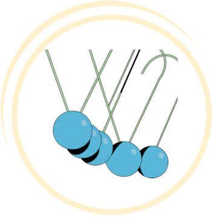
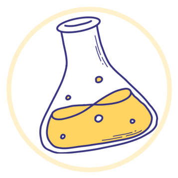
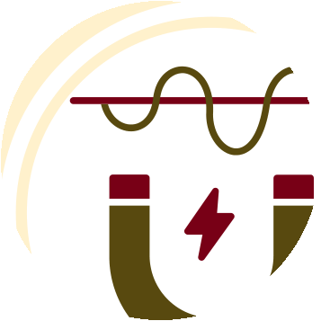
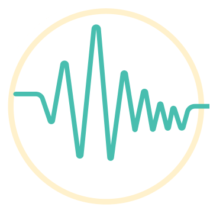

1
Chemical Engineering

Transport Phenomena
Shell Momentum Balances
Viscosity & Momentum Transport

Reaction Kinetics
Mole Balances
Stoichiometry
Conversion & Reactor Sizing
Thermodynamics
Heat Effects
Volumetric Properties of Pure Fluids
2
Electrical Engineering
Signals & Systems
Discrete Time Signals
Continuous Time Signals

Electromagnetics & Waves
Electrostatics
Magnetostatics
Waves & Phasors
Digital Communications
Deterministic & Random Signal Analysis
Digital Modulation Schemes
3
Civil Engineering
Structural Analysis
Determinate Structures
Influence Lines
Deflections
Indeterminate Analysis
Geotechnical Engineering
Phase & Index Properties
Permeability, Seepage & Effective Stress
Stress Distribution & Consolidation
Strength & Stability
Water Resources
Uniform Flow
Energy & Rapidly Varied Flow
Hydrology
4
Industrial Engineering
Production & Inventory
Deterministic Lot Sizing
Stochastic Inventory
Production Planning
Quality & Reliability Control
Variables Control Charts
Attributes Control Charts
Process Capability
Acceptance Sampling
Stochastic Operations
Queueing Systems
Markov Chains
Poisson Processes
System Reliability
5
Mechanical Engineering
Fluid Mechanics
Fluid Statics
Fluid Kinematics
Mechanics of Materials
Torsion
Stress & Strain

Vibrations & Acoustics
Harmonically Excited Vibrations
Single Degree of Freedom Systems
EngTrace
EngTrace Taxonomy